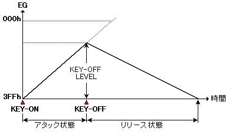
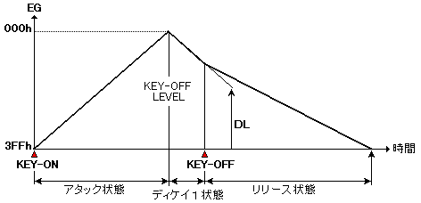
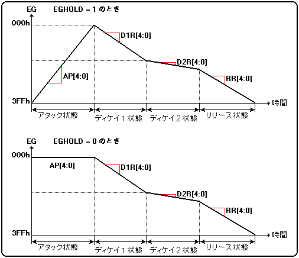
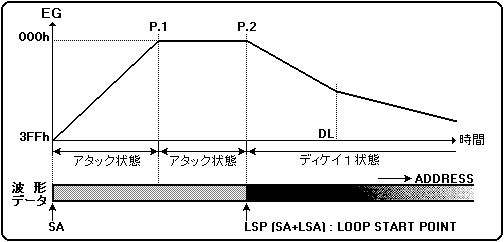
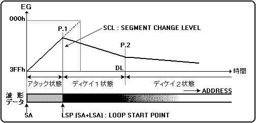
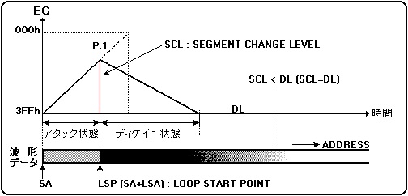

■EGレジスタ
- EGは、音の減衰量の時間による変化を表します。EGには、以下の４つの状態があります。
- アタック状態(アタックセグメント)
- 音の出始め(立ち上がり)の状態をいいます
- ディケイ１状態(ディケイ１セグメント)
- 最大音量から減衰していく状態をいいます。
- ディケイ２状態(ディケイ２セグメント)
- ディケイ１状態からさらに減衰していく状態をいいます。ただし、DR2を"0"に設定すると減衰しないで、持続音状態となります。
- リリース状態(リリースセグメント)
- KEY_OFFしたときから、音が減衰して消えていく状態をいいます。
- しかし発音状態の全ての場合において、EGが４つの状態を遷移していくわけではなく、KEY_OFFのタイミングによって様々なエンベロープカーブを描いていきます。以下にその一例を説明します。
- (a)KEY_OFFをアタック状態遷移中に行なった場合(図4.6)
図4.6 アタック状態遷移中のKEY_OFF

- KEY-OFFを行なうと、その時点でのレベル(KEY_OFF LEVEL)からリリースレイト（"RR"）の設定値に従って減衰（EGの値としては増加）していきます。従ってこの場合のエンベロープカーブは、ディケイ１状態およびディケイ２状態が抜けたような形になります。
この場合はEGの値が"000H"に達することなく、KEY_OFFを境に"3FFH"に増加していきます。
- (b)KEY_OFFをディケイ１セグメント遷移中に行なった場合(図4.7)
図4.7 ディケイ状態遷移中のKEY-OFF

- ディケイ１状態に入ると、D1R(ディケイ１レイト)の設定値に従って、DL（ディケイレベル）に向けて減衰していきます。この途中にKEY_OFFが実行されると、その後はKEY_OFFを行なった時点でのレベル（KEY_OFF-LEVEL）からRR（リリースレイト）
の設定値に従って、減衰していきます。
- AR[4:0](Ｒ／Ｗ) ; Attack Rate
- アタック状態におけるEGの変化量を指定します。
- ARレジスタの内容
- "AR"="00H"の時、変化量(レベル増加量)最小(0)
- "AR"="1FH"の時、変化量(レベル増加量)最大(MAX)
- EGHOLD(Ｒ／Ｗ) EG HOLD mode
- アタックでの値を保持または変化させるかを指定します。図4.6のように、このビットが"1B"の時、アタックでの値が"000H"に保持されます。またビットが"0B"の時、ARレジスタに指定された値に従って変化します。
ホールドモードにした場合、EGが"000H"を保持している時間(セグメント２に移るまでの時間)は、"AR"の値で決まります。
図4.8 減衰量の変化

- D1R[4:0](Ｒ／Ｗ) ; Decay-1 Rate
- ディケイ1状態におけるEGの変化量を指定します。
- D1Rレジスタの内容
- "D1R"="00H"の時、変化量(レベル減衰量)最小(0)
- "D1R"="1FH"の時、変化量(レベル減衰量)最大(MAX)
- D2R[4:0](Ｒ／Ｗ) ; Decay-2 Rate
- ディケイ2状態におけるEGの変化量を指定します。
- D2Rレジスタの内容
- "D2R"="00H"の時、変化量(レベル減衰量)最小(0)
- "D2R"="1FH"の時、変化量(レベル減衰量)最大(MAX)
- RR[4:0](Ｒ／Ｗ) ; Release Rate
- リリース状態におけるEGの変化量を指定します。
- RRレジスタの内容
- "RR"="00H"の時、変化量(レベル減衰量)最小(0)
- "RR"="1FH"の時、変化量(レベル減衰量)最大(MAX)
- DL[4:0](Ｒ／Ｗ) ; Decay Level
- ディケイ1状態からディケイ2状態へ遷移する減衰レベル(EG)の上位5ビットを指定します。ディケイ1状態で減衰レベルの上位5ビットがDL値と等しくなった時、状態がディケイ2へ遷移します。
- DLレジスタの内容
- "DL"="00H"の時、レベル最大(MAX)
- "DL"="1FH"の時、レベル最小(MIN)
- KRS[3:0](Ｒ／Ｗ) Key Rate Scaling
- EGのキーレイトスケーリングの度合いを指定します。
- KRSレジスタの内容
- 00Hでスケーリング最小
- 0EHでスケーリング最大を表します。
- 0FHの時、スケーリングOFFを指定します。
- LPSLNK(Ｒ／Ｗ) ; LooP Start LiNK
- "LPSLNK"(ループスタートリンク)の機能は、ループの開始と、EGのアタック状態からディケイ１状態への遷移の同期化を行なうものです。
- LPSLNKレジスタの内容
- "LPSLNK"＝"0B"：EGの状態の遷移とループスタートポイントの位置は無関係になります。
- "LPSLNK"＝"1B"：以下の変化が見られます。
- アタック状態でEGが"000H"に達した時、波形読み出しアドレスがループスタートポイント("SA"+"LSA")に達するよりも、
- 時間的に早かった場合
- 時間的に遅かった場合
- アタック状態でEGが"000H"に達した時、波形読み出しアドレスがループスタートポイント("SA"+"LSA")に達するよりも、時間的に早かった場合（図4.9）
- この場合は、EGが先にMAXレベルに到達します(P.1)。しかし、波形読み出しアドレスがループスタートポイントに到達するまで次のセグメント(ディケイ１状態)に遷移することはできないので、EGはMAXレベルを保持し続けます。
次に、波形読み出しアドレスがループスタートポイントに到達すると(P.2)、EGはディケイ１状態に遷移することになります。
図4.9 アタック状態からディケイ１への遷移(1)

図4.9 アタック状態からディケイ１への遷移(1)
- アタック状態でEGが"000H"に達した時、波形読み出しアドレスがループスタートポイント("SA"+"LSA")に達するよりも、時間的に遅かった場合
- このパターンは、更に２つのパターンがあります。
- パターン１
- 波形読み出しアドレスがループスタートポイントに到達し、この時点での"SCL"(EGレベル)が、"DL"（ディケイレベル）よりも大きい時（実際のEGの値で比較すると逆)(図4.10）
図4.10 アタック状態からディケイ１への遷移(2)

図4.10 アタック状態からディケイ１への遷移(2)
- 波形読み出しアドレスがループスタートポイントに到達した後、EGはディケイ１状態に遷移します(P.1)。次にEGの値がDL(ディケイレベル)に到達すると、ディケイ２状態に遷移します(P.2)。
- パターン２
- 波形読み出しアドレスがループスタートポイントに到達し、この時点での"SCL" (EGレベル)が、"DL"（ディケイレベル）よりも小さい時（実際のEGの値で比較すると逆)(図4.11）
図4.11 アタック状態からディケイ１への遷移（3）

- 波形読み出しアドレスがループスタートポイントに到達した後、EGはディケイ１
状態に遷移します(P.1)。その後はEGの値は"DL"(ディケイレベル)に到達すること
はないので、ディケイ２状態に遷移することなく、レベル０（EGの値としては"3FFH"）
を保持し続けます。